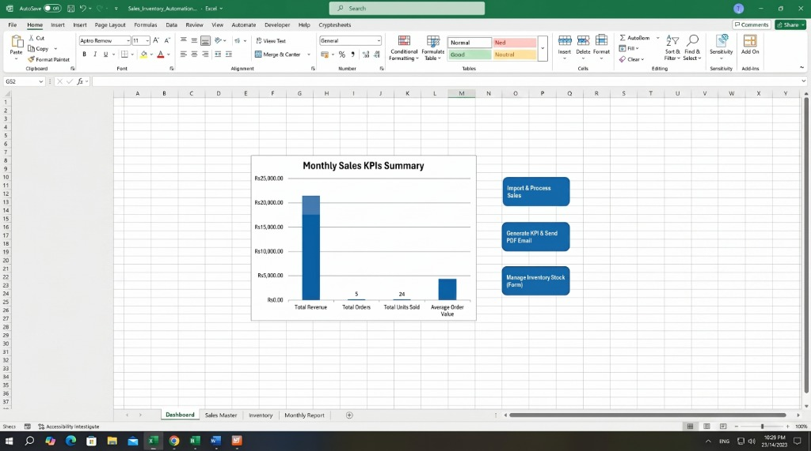

Enterprise-grade financial reconciliation engine built with Excel VBA, fuzzy matching algorithms, and automated audit trails.
Excel VBA, Levenshtein Distance, UserForms, Dictionary Objects
90%+ time reduction on month-end closing
3-tier logic (Exact, ±2-day tolerance, ≥70% string similarity)
Audit-ready landscape PDF export & append-only transaction logging
Corporate finance departments lose hours each month manually cross-referencing bank statements against general ledger transactions. Traditional spreadsheet setups rely on fragile VLOOKUP or INDEX/MATCH formulas that fail whenever:
I designed and developed an automated end-to-end reconciliation system that runs entirely inside Excel, providing software-level precision without requiring external SaaS subscriptions.
Dynamic file-picker UserForm (frmImportFiles) imports inconsistent CSV/XLSX statements, validates schemas, and flags internal duplicates before processing.
Matched, Partially Matched, Unmatched Bank, and Unmatched Ledger.Custom UserForm (frmManualReview) displaying potential match pairs side-by-side, allowing financial controllers to confirm or decouple suggested records.
Every action (import, manual verification, decoupling) is logged to an immutable audit trail with timestamps and user details. Outputs an executive-ready balance report with one-click PDF generation.
